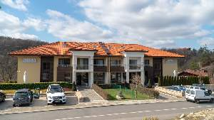
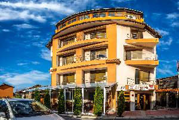
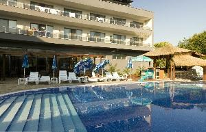
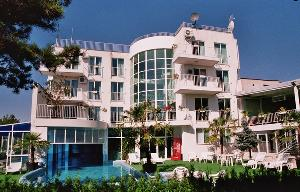
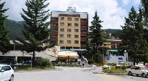
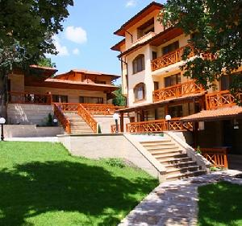
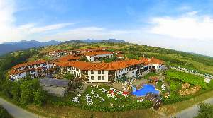
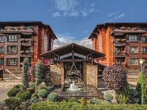

|  | Семеен СПА Хотел Олимпия се намира в СПА курорта Хасковски минерални бани, на 18 км. от град Хасково. Прекрасния климат и отличните условия за отдих през всички сезони, привличат посетители в курорта още от Римско време. На ваше разположение са общо 36 места за настаняване. Стаите са новообзаведени. СПА зоната на хотела, дава възможност да се насладите на процедури с минералната вода на нашия курорт и да се разтоварите от напрегнатото ежедневие. Предлагаме и масажи по предварителна уговорка, като цената на цялостен масаж е 50 лева, а на частичен е по договаряне. | ||
|  | Илиевата къща се намира в центъра на град Сапарева Баня. Капацитета на легловата база е 35 места. Предлага ОТКРИТ БАСЕЙН С ТОПЛА МИНЕРАЛНА ВОДА, ДЖАКУЗИ, ПАРНА БАНЯ И САУНА. Хотелът разполага с 8 стаи и 2 апартамента. Всички стаи са със самостоятелен санитарен възел, тераса, хладилник, кабелна телевизия и интернет. Апартаментите са съставени от две стаи с общ санитарен възел. В първата стая има две единични легла и разстегателен диван, а във втората спалня + единично легло. Максималния капацитет на апартаментите е 6 човека (в единия апартамент дивана е по-голям и може да събере 2-ма човека). За студените зимни дни къщата има парно отопление. | ||
|  | Спа хотел Ата е първият хотел в град Вършец с луксозен спа център, предлагащ пълната гама от спа услуги. Хотел Ата Спа разполага с 4 Панорамни апартамента, 3 семейни апартамента, 3 стандартни апартамента и 59 двойни стаи, Балнео- и СПА център, Конферентна зала 120 места, Детски кът, Открит и закрит басейн, Релакс зала, Фитнес зала, Парна баня, Сауна, Подземен и външен паркинг. Ресторантът разполага с 140 места в приятна обстановка и лятна градина с 50 места. На разположение са още конферентна зала с 120 места и зала за срещи. | ||
|  | Комплексът е построен до града върху билото на хълм, сред борова гора. Парк хотел "Бора" предлага на своите клиенти уютна атмосфера и панорамна конферентна зала за провеждане на семинари и бизнес мероприятия. Комплексът разполага с 9 двойни стаи с допълнително легло, 4 апартамента с кръгли спални и канапе - легло. Всички стаи са оборудвани с климатик, мини бар, телевизор, телефон, тераса, санитарен възел с вана. Обслужване по стаите. В комплекса работи без почивен ден панорамен ресторант със 100 места, бар и лятна тераса със 70 места. Организират се професионални и семейни тържества, коктейли, сватби, кръщенета, юбилейни годишнини. Кетъринг. Очакват Ви великолепна кухня, отличен оркестър, уютна обстановка, впечатляваща панорама. Вие го заслужавате. Заповядайте! Насладете се на една пълноценна почивка. | ||
|  | Четиризвездният СПА хотел “Девин” e част от българската верига „Шарлопов Хотелс”. Разположен е в сърцето на природния феномен Родопа планина, в центъра на балнеологичният град Девин, на 710 метра надморска височина. Хотелът е отлично място, където да се отпуснете и да се отдадете на отдих и културни развлеченияили да проведете Вашата бизнес среща. Основният продукт на СПА хотел „Девин“ е балнеолечението, тук ще възстановите тялото и духа си от стреса на работното ежедневие с помощта на доказаните лечебни свойства на Беденската минерална вода. Хотелът разполага с обща база за настаняване от 122 места, разпределени в 8 уютни единични стаи, 48 просторни двойни стаи и 6 луксозни апартамента тип студио. Всяка стая е оборудвана с климатик, минибар, сателитна телевизия и луксозен санитарен възел с вана за апартаментите и душ кабина за стаите. Итериорът им е решен в пастелени меки цветове на оранжево, зелено или червено. Единичните стаи и студиата разполагат с тераса, разкриваща гледка към град Девин или Родопите. | ||
|  | В хотел Армира можете да отседнете в комфортни стаи, апартаменти или вили и да се насладите на лечебната минерална вода. Двойните стаи разполагат с телевизор, минибар, телефон, сешоар, баня, допълнително разгъваемо канапе за деца до 12 г. Студиата са оборудвани с хол, спалня, климатик, телевизор, минибар, телефон, сешоар, баня с вана, допълнително разгъваем диван за още две деца или един възрастен. Апартаменти имат хол, спалня, тераса, климатик, телевизор, минибар, телефон, сешоар, баня, допълнително разгъваем диван за още две деца или един възрастен. | ||
|  | Описание на Комплекс "Старосел" Комплекс за винен и СПА туризъм "Старосел" се състои от винарска изба, дегустационна зала, четири конферентни зали, три хотелски части, два ресторанта, СПА център. СПА център СПА центърът разполага с външен минерален басейн, вътрешен минерален басейн с хидромасажни джакузита, детски басейн, финландска сауна, арома сауна, парни бани, фитопаро бъчва, джакузи, хамам баня, релакс помещение, ледено ведро, широко разнообразие от масажи и СПА терапии, винотерапии, масажен стол | ||
|  | Най-новият и най-модерен 5-звезден комплекс във Велинград ;
Хотелска част със 113 стаи Делукс;
Разположен сред гъста борова гора в най-високата част на Велинград;
Екслузивен SPA & Wellness център, оборудван по най-съвременните тенденции;
Разнообразие от услуги – парна баня, финландска сауна, руска сауна, кедрова сауна, тепидариум, турска баня и зала за релакс;
Два собствени минералени водоизточника;
Два открити и три закрити минералени басейни; Фитнес зала;
Барове, ресторанти и механа;
Детски кътове и разнообразие от забавления за малките посетители.
Парк хотел и СПА Макси разполага със 113 просторни стаи с площ от 52 кв.м. и самостоятелни тераси. Гостите могат да се възползват от следните удобства:
- Kingsize легло
- Зона с мека мебел
- Мини-бар с алкохолни и безалкохолни напитки - Бюро
- Просторна баня с душ кабина и вана
- сешоар
- Луксозни халати и памучни хавлии
- Индивидуално котролиране на отопление и охлаждане
- Сейф
- Кабелна ТВ
- Безплатен безжичен интернет
- Телефон
- Ежедневно почистване
- 24-h рецепция
Заповядайте! |
||